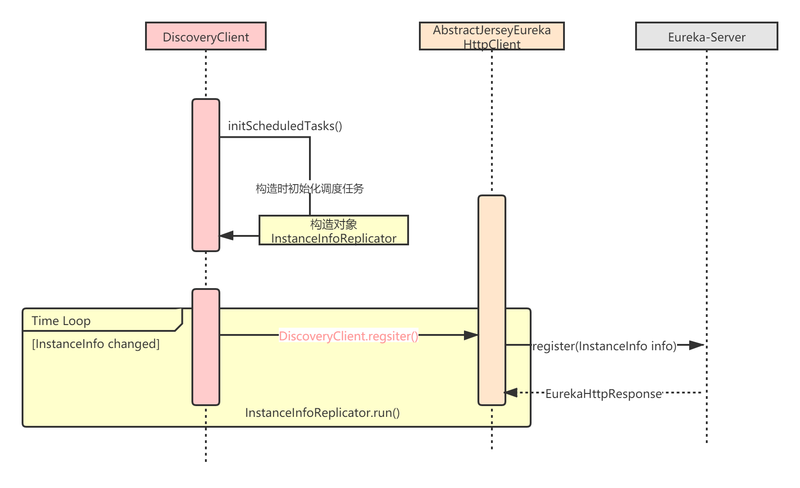
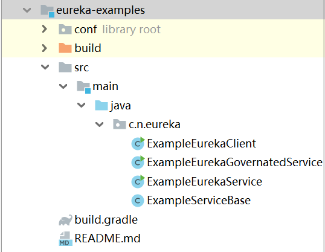

从本章开始，我们正式进入Eureka的服务注册流程的学习。Eureka服务注册，我将分两部分来讲解：客户端（Eureka-Client）发起注册流程和服务端（Eureka-Server）接受注册流程。
Eureka-Client发起注册的核心过程，我用下面这张时序图表示：

注意：在Eureka源码工程目录下，有一个eureka-examples模块，里面包含了很多使用示例，读者可以先去阅读下ExampleEurekaClient和ExampleEurekaService这两个示例：

示例比较简单，我这里就不赘述了，本章主要讲解Eureka-Client发起注册的流程。
Eureka-Client发起注册需要满足以下条件：
eureka.registration.enabled = true，这是Eureka-Client 向 Eureka-Server 发起注册应用实例的开关；符合条件后，InstanceInfo 不会立即向发起 Eureka-Server 注册，而是通过一个后台线程定时注册。每次 InstanceInfo 的属性变化时，Eureka-Client会标记 isInstanceInfoDirty 属性为 true，后台线程会定时检测，并发起注册。
注意：如果设置了参数
eureka.shouldOnDemandUpdateStatusChange = true，那么一旦 InstanceInfo 的状态(status) 属性发生变化，就会被监听器监听到，并立即向 Eureka-Server 进行一次注册，不会等待线程池调度。这个参数默认情况是开启的。
Eureka-Client的发起注册入口在一个名为initScheduledTasks的方法中，会在DiscoveryClient对象构造时调用：
/**
* DiscoveryClient.java
*/
// 应用实例状态变更监听器
private ApplicationInfoManager.StatusChangeListener statusChangeListener;
// 应用实例信息复制器
private InstanceInfoReplicator instanceInfoReplicator;
DiscoveryClient(ApplicationInfoManager applicationInfoManager, EurekaClientConfig config, AbstractDiscoveryClientOptionalArgs args, Provider<BackupRegistry> backupRegistryProvider) {
//...
initScheduledTasks();
//...
}
// DiscoveryClient#initScheduledTasks
private void initScheduledTasks() {
//...
if (clientConfig.shouldRegisterWithEureka()) {
//...
// 创建【应用实例复制器】
instanceInfoReplicator = new InstanceInfoReplicator(
this,
instanceInfo,
clientConfig.getInstanceInfoReplicationIntervalSeconds(),
2); // burstSize
// 创建【应用实例状态监听器】
statusChangeListener = new ApplicationInfoManager.StatusChangeListener() {
@Override
public String getId() {
return "statusChangeListener";
}
@Override
public void notify(StatusChangeEvent statusChangeEvent) {
if (InstanceStatus.DOWN == statusChangeEvent.getStatus() ||
InstanceStatus.DOWN == statusChangeEvent.getPreviousStatus()) {
// log at warn level if DOWN was involved
logger.warn("Saw local status change event {}", statusChangeEvent);
} else {
logger.info("Saw local status change event {}", statusChangeEvent);
}
instanceInfoReplicator.onDemandUpdate();
}
};
// 注册【应用实例状态监听器】，用于状态变更时立即发起注册
if (clientConfig.shouldOnDemandUpdateStatusChange()) {
applicationInfoManager.registerStatusChangeListener(statusChangeListener);
}
// 启动【应用实例复制器】，内部会发起服务注册
instanceInfoReplicator.start(clientConfig.getInitialInstanceInfoReplicationIntervalSeconds());
} else {
logger.info("Not registering with Eureka server per configuration");
}
}
可以看到，DiscoveryClient在内部创建了一个应用实例复制器InstanceInfoReplicator。InstanceInfoReplicator是一个Runnable任务，需要被线程池调度执行，实际发起注册的逻辑就在里面。
Eureka服务注册的设计其实不太好，注册和复制完全是两个不同的概念，这个搞了一个InstanceInfoReplicator，把服务注册和实例复制的逻辑混在了一起，不符合“单一职责”原则。而且“注册”这么重要的核心功能还隐藏得这么深，读者后面会看到，整个“注册”的类体系设计非常复杂，个人感觉完全没必要这样设计。
我们来看下应用实例复制器，这里的关键有两点：
/**
* InstanceInfoReplicator.java
*/
class InstanceInfoReplicator implements Runnable {
private static final Logger logger = LoggerFactory.getLogger(InstanceInfoReplicator.class);
private final DiscoveryClient discoveryClient;
// 应用实例信息
private final InstanceInfo instanceInfo;
// 定时执行频率，单位：秒
private final int replicationIntervalSeconds;
// 定时调度线程池
private final ScheduledExecutorService scheduler;
// 定时执行任务的 Future
private final AtomicReference<Future> scheduledPeriodicRef;
// 是否开启调度
private final AtomicBoolean started;
// 限流相关，后续章节讲解
private final RateLimiter rateLimiter;
private final int burstSize;
private final int allowedRatePerMinute;
InstanceInfoReplicator(DiscoveryClient discoveryClient, InstanceInfo instanceInfo, int replicationIntervalSeconds, int burstSize) {
this.discoveryClient = discoveryClient;
this.instanceInfo = instanceInfo;
this.scheduler = Executors.newScheduledThreadPool(1,
new ThreadFactoryBuilder()
.setNameFormat("DiscoveryClient-InstanceInfoReplicator-%d")
.setDaemon(true)
.build());
this.scheduledPeriodicRef = new AtomicReference<Future>();
this.started = new AtomicBoolean(false);
this.rateLimiter = new RateLimiter(TimeUnit.MINUTES);
this.replicationIntervalSeconds = replicationIntervalSeconds;
this.burstSize = burstSize;
this.allowedRatePerMinute = 60 * this.burstSize / this.replicationIntervalSeconds;
logger.info("InstanceInfoReplicator onDemand update allowed rate per min is {}", allowedRatePerMinute);
}
public void start(int initialDelayMs) {
if (started.compareAndSet(false, true)) {
// 设置应用实例Dirty，因为此时服务端没有实例，所以强制发起一次注册
instanceInfo.setIsDirty();
// 延时initialDelayMs时间后，开始调度
Future next = scheduler.schedule(this, initialDelayMs, TimeUnit.SECONDS);
scheduledPeriodicRef.set(next);
}
}
//...
}
InstanceInfoReplicator的start方法会将Runnable任务（也就是它自己）扔给线程池进行调度，所以我们继续看InstanceInfoReplicator.run()：
/**
* InstanceInfoReplicator.java
*/
public void run() {
try {
// 1.刷新应用实例信息
// 这里就是看看配置有没有改变；然后用健康检查器，检查下实例状态，更新状态并设置到ApplicationInfoManager中
discoveryClient.refreshInstanceInfo();
// 2.判断应用实例信息是否改变过，首次注册时因为强制设置dirty，所以肯定不为null
Long dirtyTimestamp = instanceInfo.isDirtyWithTime();
if (dirtyTimestamp != null) {
// 3.发起注册
discoveryClient.register();
// 重置实例ditry状态
instanceInfo.unsetIsDirty(dirtyTimestamp);
}
} catch (Throwable t) {
logger.warn("There was a problem with the instance info replicator", t);
} finally {
// 4.再次提交任务
Future next = scheduler.schedule(this, replicationIntervalSeconds, TimeUnit.SECONDS);
scheduledPeriodicRef.set(next);
}
}
注意，上述流程中，发起注册完成后，在finally里又调用 ScheduledExecutorService#schedule(...) 方法，再次延迟执行任务。Eureka-Client就是通过这样的方式，不断循环定时执行服务注册任务的。
说实话，这种定时调度的方式真的有点奇葩。